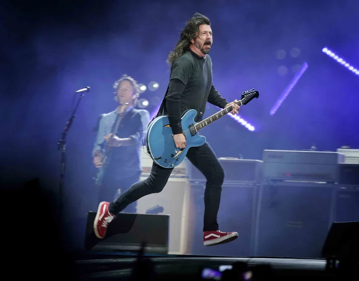
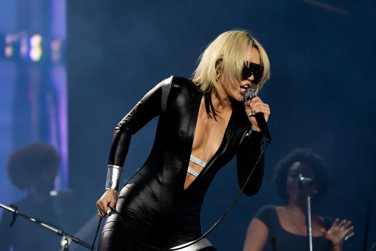
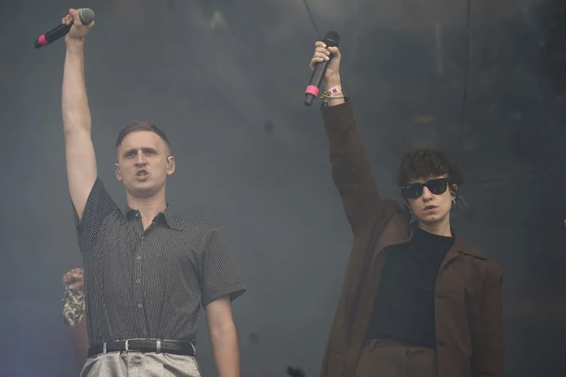

¡Lo mas destacado del fin de semana!

El grand finale del Lollapalooza Argentina 2022 se comenzaba a definir al anochecer de la tercera jornada del festival. Foo Fighters, los auténticos pesos pesados de este gran periplo multimusical decían presente en el escenario Flow.

Cayó la noche y asomaron los patanes al escenario Flow del Lollapalooza. Los Strokes, esos cinco atorrantes adorables que cambiaron el sonido de Manhattan a comienzos de este tumultuoso siglo y que continúan la feliz saga de las bandas más argentas de afuera -esa que supieron protagonizar los Stones, Ramones y Megadeth-, volvieron a verse las caras con la parcialidad strokera que dijo presente en voz alta en el predio sanisidrense.

Con el catsuit negro, con anteojos del mismo color o el eco de los Pixies (“Where Is My Mind?”) en el tema que dio inicio a su presentación, entre otros detalles, Miley funcionó como el punto de equilibrio entre los artistas urbanos que dominaron la jornada (A$AP Rocky, Duki, Dillom, 070 Shake) y el sonido hardcore de Turnstile o el metalcore de A Day To Remember.

Jaime James, mejor conocido como Louta, volvió a tocar en Buenos Aires después de mucho tiempo. Difícilmente en este horario, en el que habitualmente se presentan los artistas emergentes y con menos convocatoria, veamos una puesta en escena como la que dio él.
© Lollapalooza
Seguinos en nuestras redes sociales